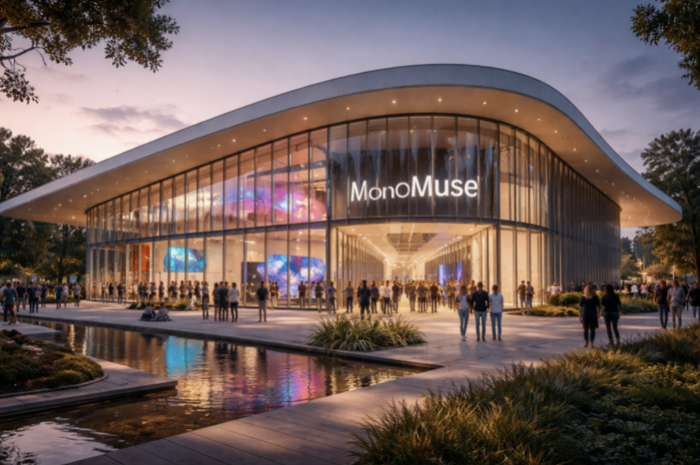

Mission Statement
MonoMuse is dedicated to exploring the evolving relationship between art, technology, and society. Our mission is to inspire curiosity and creativity by showcasing innovatie exhibitions that highlight how digital tools, emerging technologies, and human imagination shape the future of artistic expression.
Milestones
- 2023: Expansion of the museum space and launch of international artist collaborations.
- 2018: Launch of the Interactive Media Lab, allowing visitors to experiment with creative coding.
- 2016: MonoMuse opens its doors with its first exhibition on digital storytelling.